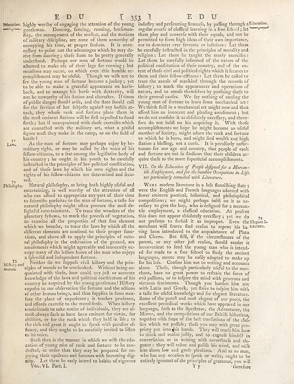

Scan ID britannica:309f765b1ecc83e0a7f7762e44b4a927a7555443:train:1422
Image SHA-256 8d39d99af99249708a75d8e526080ae109f37e42e0fecd3c25a81e10774f2f4e
Status: ok. Running header: **ED U** **[ 353 1 E D U** (catchword). Removed page furniture: Page-header: **ED U** **[ 353 1 E D U**, Page-footer: You. VI. Part. I..
PDF · raw Parse reply · LaTeX

| # | Class | Box | Parse 3.5 | Used text | Source |
|---|---|---|---|---|---|
| 1 | Text | [0.0059, 0.0563, 0.4609, 0.368] | highly worthy of engaging the attention of the young gentleman. Dancing, fencing, running, horteman- flip, the management of the mofics, and the motions of military glimphes, are more at them worthy of occupying his time, at proper feafons. It is unenceffary to point out the advantages which he may be view from claiming it their own in to be pretty generally understood. Perhaps our men of forture would be afhamed to make use of their legs for running; but occasions may occur, on which even this humble do compliment may be useful. Though we with not to fee the young man of fortune become a jock | highly worthy of engaging the attention of the young gentleman. Dancing, fencing, running, horsemanship, the management of the musket, and the motions of military discipline, are none of them unworthy of occupying his time, at proper seasons. It is unnecessary to point out the advantages which he may derive from dancing; these seem to be pretty generally understood. Perhaps our men of fortune would be ashamed to make use of their legs for running; but occasions may occur, on which even this humble accomplishment may be useful. Though we wish not to see the young man of fortune become a jockey; | super_vl |
| 2 | Section-header | [0.0166, 0.3617, 0.0527, 0.3883] | Lav. | Lav. | parse_fallback · box_too_small |
| 3 | Section-header | [0.0156, 0.6734, 0.0723, 0.707] | 7. Milbury and morals | 73 History and morals. | super_vl |
| 4 | Section-header | [0.0146, 0.4719, 0.0693, 0.4922] | Philophy. | Philosophy- | super_vl |
| 5 | Text | [0.0137, 0.4031, 0.4619, 0.6742] | Natural philosophy, as being both highly ufeful and entertaining, as well worthy of the attention of all who can talked to appropriate anayment of their time to fictific purifuits; to the man of fortune, a taille for mutual philopholy might often procure the mind de-lightful environment. To trace the wonder of a planetary tytions, to mark the proceeds of vegetation, to examine all the properties of that the elements which we bearbe, to trace the laws by which all the different elements are confined to their proper funcions, and above all to apply the principles of natural philopholy in the cul | Natural philosophy, as being both highly useful and entertaining, is well worthy of the attention of all who can afford to appropriate any part of their time to scientific pursuits; to the man of fortune, a taste for natural philosophy might often procure the most delightful entertainment. To trace the wonders of the planetary systems, to mark the progress of vegetation, to examine all the properties of that fine element which we breathe, to trace the laws by which all the different elements are confined to their proper functions, and above all to apply the principles of natural philosophy in | super_vl |
| 6 | Text | [0.0176, 0.682, 0.4629, 0.8789] | Neither do we fuppole civil history and the pria-ciples of animals to be overlooked. Without being anaquished with theftsy, how could not yunk or accurate knowledge of the laws and political contributions of his country be acquired by the young generation! Hilory expects to war observation the fortune and the echo of other human beings, and thus fuppies in force mea: fine the place of experience; it teacher graduate, and affords exercise to the moraliente. When history condelends to take notice of individuals, they see all making always flesh a have been embent for virtue, for abilities, or fo | Neither do we suppose civil history and the principles of morals to be overlooked. Without being acquainted with these, how could any just or accurate knowledge of the laws and political constitution of his country be acquired by the young gentleman? History exposes to our observation the fortune and the actions of other human beings, and thus supplies in some measure the place of experience; it teaches prudence, and affords exercise to the moral sense. When history condescends to take notice of individuals, they are almost always such as have been eminent for virtue, for abilities, or for the | super_vl |
| 7 | Text | [0.083, 0.8797, 0.4639, 0.9469] | Such then is the manner in which we with the education of young men of mind, and forture to be con-ducts; in order that they may be prepared for en-joying their opulence and honours with becoming dig- integrity. Let them be early inured to habit of vigorous | Such then is the manner in which we wish the education of young men of rank and fortune to be conducted, in order that they may be prepared for enjoying their opulence and honours with becoming dignity. Let them be early inured to habits of vigorous | super_vl |
| 8 | Text | [0.4688, 0.0523, 0.8525, 0.4219] | indufry and perfevering firmness, by pulling through a Education. regular course of claffical learning in a free (chool; let them play and converser with their equals, and not be permitted to form high ideas of their own importance, nor to dominate over ferrets or infortors; Let them be carefully instructed to the principles of monality and religion. Let now be taught the mainly exercices: Let them be carefully informed of the nature of the political constitution of their country, and of the ex-tent of their spirit and politick rights which is focuses to them and their fellow-officers; Let the | industry and persevering firmness, by passing through a regular course of classical learning in a free school; let them play and converse with their equals, and not be permitted to form high ideas of their own importance, nor to domineer over servants or inferiors: Let them be carefully instructed in the principles of morality and religion: Let them be taught the many exercises: Let them be carefully informed of the nature of the political constitution of their country, and of the extent of the civil and political rights which it secures to them and their fellow-citizens: Let them be called to | super_vl |
| 9 | Section-header | [0.4678, 0.4281, 0.8467, 0.4688] | ## VII. In the Education of People Affordford for a Mercan- tile deployments and join the number Occupations in Life is particularly controlled with Literatures. | VII. On the Education of People designed for a Mercantile Employment, and for the humbler Occupations in Life not particularly connected with Literature. | super_vl |
| 10 | Text | [0.4668, 0.4734, 0.8545, 0.9484] | Wars modern literature in a lefs flourishing flare; were the English and French language along with fewer tenents social, albidental, and philosophical compositions; we might perhaps infinit on it as ne-efficacy to give the boy, who is designed for a mercun-tile emplements, a classification function. At present this does not appear absolutely necellary; yet we do not perform to forbid it as improperly. Even the Elegantile members will never lead reason to repon, his he cannot, vying been introduced to the acquaintance of Plato and Cicero. But fall, of the circumnation of the parents, or any ot | Were modern literature in a less flourishing state; were the English and French languages adorned with sewer eminent poetical, historical, and philosophical compositions; we might perhaps insist on it as necessary to give the boy, who is designed for a mercantile employment, a classical education. At present this does not appear absolutely necessary; yet we do not presume to forbid it as improper. Even the merchant will scarce find reason to repent his having been introduced to the acquaintance of Plato and Cicero. But still, if the circumstances of the parent, or any other just reason, should | super_vl |
Britannica scans: National Library of Scotland, CC0 1.0. Wikipedia text: Wikipedia contributors, CC BY-SA 4.0, revision links on each page. Generated 2026-10-18T13:26:14+00:00.